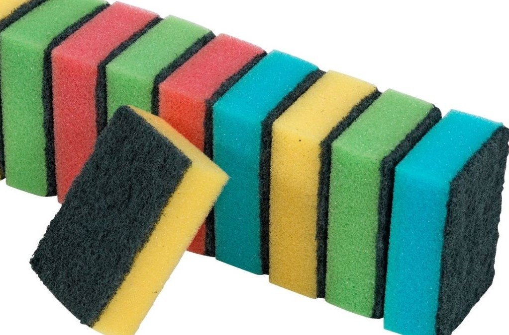

Krumplipucoló
Ezzel is lehet krumplit pucolni és talán még egyszerűbb is.

A krumplit negyedórára sós vízbe áztatjuk, majd egy kis késsel egyesével lekaparjuk a gumókat. Időigényes, de tökéletes lesz a végeredmény.
Felejtse el a fárasztó, időigényes és unalmas kézi krumplihámozást! A burgonyahámozóval egyszerre akár 1 kg krumplit is meghámozhat, mindössze 2 perc alatt!

Talán ez a leggyorsabb, főleg, ha nem túl aprók a szemek. Érdemes erre a célra rendszeresíteni egy dörzsi szivacsot, folyó víz alatt egyesével lesúroljuk a szemeket. Ha friss a krumpli, villámgyorsan le tudjuk dörgölni róla a vékony héjat. Egy jó erős kefe is megfelel erre a célra.
Egy régi konyharuha felére sót szórunk, ráborítjuk a parázskrumplit, átforgatjuk, és a konyharuha másik felével alaposan átdörgöljük. Apró szemű burgonyához ajánljuk.